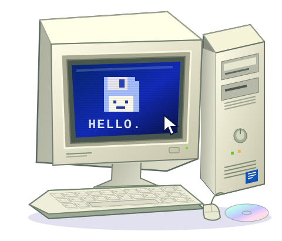

Build from scratch
Components for your apps, games and budget. Spend on what you’ll actually use.
Your computer workshop
Built for your work. Upgraded for what’s next.
Bring your favourite PC back to life.

OLD SCHOOLComponents for your apps, games and budget. Spend on what you’ll actually use.
Check compatibility, find the bottleneck and upgrade the part that makes a difference.
Work through heat, noise and crashes. Clean it, tune it and keep your important data.
Start with what you need your computer to do. Video editing, a quiet home setup and evenings in your favourite game call for different choices.
Explain component choices in plain language. Check compatibility. Find the cause of a problem before suggesting a replacement.
More from
every byte.
Not always. An SSD, more memory or a cooling-system service may be enough. First, find what’s holding your particular workflow back.
Yes, if there’s enough space, the mounting points fit and adequate cooling is possible. Check compatibility before the build.
Note when the issue happens and back up important files to a separate drive. Your notes help reproduce the issue and find its cause.